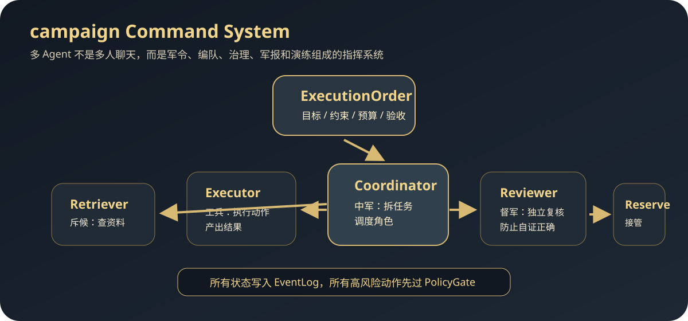
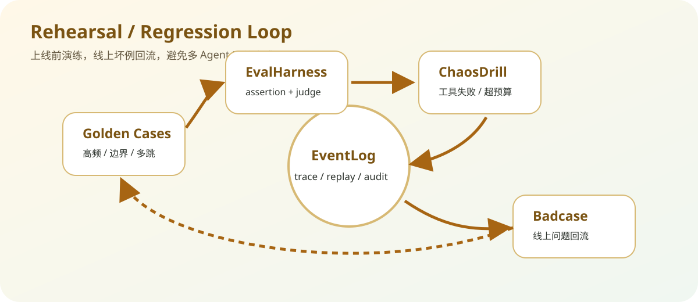

Multi-Agent 不是多人聊天，而是一套可指挥、可治理、可演练的作战系统
campaign 的核心思想是：多 Agent 系统不能只靠“角色 prompt”拼起来，而要像组织一支可控队伍一样，把目标、角色、授权、通信、审计、复盘和演练都工程化。它用 Coordinator / Executor / Retriever / Reviewer / Reserve 等角色，把 Agent 协作变成可测试的 runtime。
一、原始思考：从“将兵”到“Agent 编队”
孙子兵法里讲“道、天、地、将、法”，放到 Agent 系统里，就是目标一致、环境约束、工具地形、角色能力和制度流程。
为什么不是一个大 Agent
一个大 Agent 什么都做，短期看简单，长期会失控：上下文膨胀、职责混杂、错误难定位、权限难隔离。真实系统更像军队组织，不同兵种负责侦察、执行、复核、预备和指挥。
为什么也不是一堆 persona
多 Agent 如果只是“你是产品经理、你是程序员、你是测试”这种角色扮演，本质还是聊天。工程化多 Agent 必须有明确协议、事件日志、状态机、预算、权限和验收标准。
二、指挥体系映射

ExecutionOrder -> Coordinator creates Tasks -> Router assigns capable agents -> Agents communicate by A2A Message -> PolicyGate checks authority / budget / egress -> EventLog records every state transition -> Reviewer validates output -> EvalHarness / ChaosDrill rehearses failure modes
三、工程架构
Command Layer
用 ExecutionOrder 和 Task 把自然语言目标变成可执行命令：objective、constraints、skills、budget、acceptance criteria 都要显式化。
ExecutionOrderTaskAcceptance CriteriaRuntime Layer
Coordinator / Executor / Retriever / Reviewer / Reserve 通过显式 A2A message 协作。状态来自事件回放，而不是隐藏全局变量。
CoordinatorExecutorReviewerGovernance Layer
PolicyGate 负责预算、权限、数据外泄、prompt injection 检查。危险动作先治理，再执行，不把风险交给模型自觉。
PolicyGateBudgetAuthorityEvent-Sourced State
EventLog 只追加，不覆盖。系统状态由 run_id 范围内的事件 replay 得出，方便审计、恢复、回放和问题定位。
EventLogReplayrun_idA2A Transport
本地 agent 和远程 agent 都走统一 Message envelope。支持 in-process、HTTP JSON-RPC、SSE、capability discovery 和 remote proxy。
A2AJSON-RPCSSERehearsal Layer
上线前不靠感觉，而是通过 EvalHarness 和 ChaosDrill 演练失败：超预算、工具失败、review 拒绝、远程 agent 不可用、权限违规。
EvalHarnessChaosDrillRegression四、论文思想映射
ReAct：行动前后都有观察
单个 Agent 内部仍然遵循 reasoning / action / observation 循环；campaign 把这个循环扩展到团队级调度和事件日志。
Reference: ReAct: Synergizing Reasoning and Acting in Language Models
Toolformer：工具成为模型能力边界
每个 agent 的能力不是口头声明，而是由可调用工具、权限、预算和协议决定。工具越清晰，角色边界越清晰。
Reference: Toolformer: Language Models Can Teach Themselves to Use Tools
Reflexion：失败进入复盘系统
campaign 的 EvalHarness / ChaosDrill 把失败变成可复现演练，而不是一次性报错。复盘结果回到策略、规则和回归用例。
Reference: Reflexion: Language Agents with Verbal Reinforcement Learning
Voyager：技能库和长期积累
多 Agent 不是每次从零开始，而是通过 skill registry、memory、knowledge store 积累能力，形成可复用兵种。
Reference: Voyager: An Open-Ended Embodied Agent with Large Language Models
五、为什么这个设计更“生产级”

- 有命令，不只是聊天：ExecutionOrder 明确目标、预算、约束和验收标准。
- 有编队，不只是角色名：Coordinator、Retriever、Executor、Reviewer、Reserve 形成职责隔离。
- 有军法，不靠自觉：PolicyGate 对权限、预算、数据外泄和 prompt injection 做拦截。
- 有军报，不怕追责：EventLog 记录每一步，trace 可以回放。
- 有演习，不靠上线撞：EvalHarness 和 ChaosDrill 把失败场景前置。
六、与常见 Multi-Agent 框架的取向对比
campaign 的定位不是替代 LangGraph / AutoGen / CrewAI，而是验证“生产级 Multi-Agent runtime”需要哪些治理、审计和演练机制。
| 维度 | 常见框架常见取向 | campaign 的设计取向 | 优势 | 代价 / 不足 |
|---|---|---|---|---|
| 任务入口 | 通常从 role prompt 或 workflow node 开始。 | 先定义 ExecutionOrder：目标、约束、预算、验收标准。 | 任务边界更清楚，不容易变成多角色闲聊。 | 比简单 demo 更重，上手需要理解命令模型。 |
| 状态管理 | 多依赖当前状态、聊天历史或框架内部状态。 | EventLog append-only，状态由 replay 推导。 | 更适合 trace、审计、恢复和问题复盘。 | 事件模型需要额外设计，开发成本更高。 |
| 角色分工 | 角色多由 prompt 描述，执行和判断容易混在一起。 | Coordinator / Retriever / Executor / Reviewer / Reserve 分离。 | 执行者和复核者分离，避免模型自证正确。 | 流程更长，简单任务可能显得过度设计。 |
| 治理边界 | 安全常靠 prompt 约束或外部业务代码补。 | PolicyGate 把权限、预算、数据外泄、注入风险前置。 | 高风险操作更可控，更适合企业系统。 | 策略规则需要持续维护，不能完全靠模型自动化。 |
| 失败处理 | 更关注 happy path demo 和快速编排。 | EvalHarness + ChaosDrill 主动演练失败模式。 | 能把线上坏例变成回归资产，提升可验证性。 | 真实大规模生产验证还需要更多案例沉淀。 |
| 生态成熟度 | LangGraph / AutoGen / CrewAI 生态、教程和集成更丰富。 | 小而完整的参考实现，重点在 runtime 机制。 | 代码可读，便于讲清楚工程机制和取舍。 | 生态、连接器、社区案例不如成熟框架。 |
七、项目地址
GitHub: https://github.com/dgy-github/campaign-muti-agent
展示页: https://dgy-github.github.io/campaign-muti-agent/